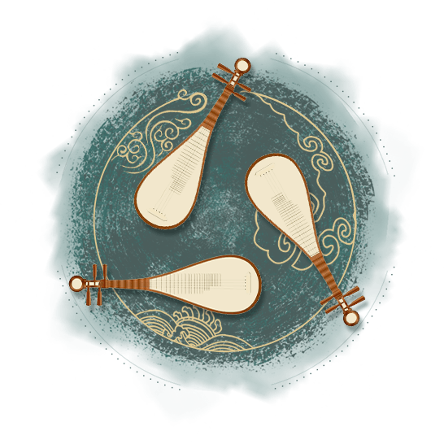

<

0%
<
小知识：什么是曲艺？——曲艺是演员以本色身份采用口头语言“说唱”叙述的表演艺术门类。
问题：
根据上面的介绍，你认为下列哪4个非遗项目属于曲艺：
A.西河大鼓
B.侗族大歌
C.粤剧
D.赫哲族伊玛堪
E.河北梆子
F.相声
G.秦腔
H.北京评书
第
1/8
题
确定
正确答案：
A.西河大鼓 D.赫哲族伊玛堪 F.相声 H.北京评书
解答：
上述4个项目，其演员都以本色身份出现在观众面前，进行第三人称统领的口语“说唱”叙述，即便要表现故事中人物的言行举止，也仅是通过口吻、语音、动作、神态等进行模拟和演示。
而其他选项中，侗族大歌为传统音乐类非遗项目，粤剧、河北梆子、秦腔为容易混淆的传统戏剧类非遗项目。对于传统戏剧而言，演员以“扮演”形式化装成故事中的人物进行角色化代言模仿，这是它与曲艺的显著区别。
下一题
小知识：曲艺的分类大致有哪些？——我国品类繁多、异彩纷呈的曲艺形式，依照艺术审美的功能特点，总体而言可以分为“说书”“唱曲”和“谐趣”三大类型。“说书”类的曲种擅长叙事，“唱曲”类的曲种长于抒情，“谐趣”类的曲种偏重说理。
问题：
根据上面的介绍和你的了解，下列曲艺项目分类正确的是：
A.说书：苏州弹词、山东琴书
唱曲：四川清音、梅花大鼓
谐趣：数来宝、独脚戏
B.说书：山东琴书、数来宝
唱曲：苏州弹词、四川清音
谐趣：梅花大鼓、独脚戏
C.说书：苏州弹词、独脚戏
唱曲：四川清音、梅花大鼓
谐趣：山东琴书、数来宝
第
2/8
题
确定
正确答案：
A.说书：苏州弹词、山东琴书
唱曲：四川清音、梅花大鼓
谐趣：数来宝、独脚戏
下一题
问题：
图中的表演形式更像是下列哪个曲艺项目？
A.莲花落
B.凤阳花鼓
C.山东大鼓
第
3/8
题
确定
正确答案：
C.山东大鼓
解答：
山东大鼓是我国北方现存最早的曲艺鼓书暨鼓曲形式，最初只是敲击犁铧碎片伴奏，采用山东方言来演唱当地的民歌小调，后逐渐发展为有板式变化的成套唱腔、敲击矮脚鼓和特制半月形梨花片并有三弦伴奏的“说唱”表演形式。
图中演员：祝天月。
下一题
问题：
图中的曲艺表演形式主要分布在我国的什么地区？
A.北方
B.南方
第
4/8
题
确定
正确答案：
B.南方
解答：
这个国家级非遗代表性项目是苏州评弹（苏州评话、苏州弹词），图中表演的是苏州弹词。苏州弹词是以说唱相间的方式，用苏州方言表演的“小书”类曲艺说书形式，发源并流行于以苏州为中心的江苏东南部、浙江北部和上海等吴语方言区。由于和苏州评话同属说书行业，曾经拥有共同的行会组织，民间习惯性地将其与苏州评话合称为“苏州评弹”。
图中演员：金丽生（左）、张敏（右）。
下一题
问题：
琵琶用于以下哪个曲艺项目的伴奏？（多选）
A.粤曲
B.四川清音
C.常德丝弦
第
5/8
题
确定
正确答案：
A.粤曲 B.四川清音 C.常德丝弦
解答：
四川清音因演唱时多用月琴或琵琶伴奏，又叫“唱月琴”“唱琵琶”。
粤曲表演形式为一至二人演唱，另有多人分持高胡、扬琴、琵琶、横箫、长喉管、二弦、提琴（一种广东本地的民间乐器）、短喉管、月琴等专司伴奏。
常德丝弦因用扬琴、琵琶、月琴、三弦、二胡、京胡等丝弦乐器伴奏而得名，传统表演形式为多人分持扬琴、鼓板、京胡、二胡、三弦和琵琶等围坐一圈，轮递说唱。
下一题
问题：
蒙古四胡用于以下哪个曲艺项目的伴奏？
A.好来宝
B.数来宝
C.龙舟说唱
第
6/8
题
确定
正确答案：
A.好来宝
解答：
好来宝意为“连韵说唱”，主要流传于内蒙古科尔沁草原及周边地区，演出时演员多用蒙古四胡自拉自唱，多人好来宝则用小乐队伴奏。
下一题
听音频猜项目：你听到的这段作品节选，属于哪种曲艺形式？
A.粤曲
B.二人转
C.河南坠子
第
7/8
题
确定
正确答案：
C.河南坠子
解答：
该音频为河南坠子节目《李逵夺鱼》选段。
演述人：刘宗琴。
下一题
听音频猜项目：你听到的这段作品节选，属于哪种曲艺形式？
A.山东琴书
B.北京评书
C.天津快板
第
8/8
题
确定
正确答案：
A.山东琴书
解答：
该音频为山东琴书节目《反话》选段。
演述人：朱丽华、耿殿生；伴奏：贺长煜、张济祥、刘丕端、张慧。
查看得分